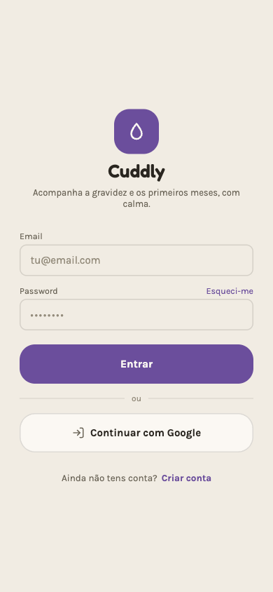
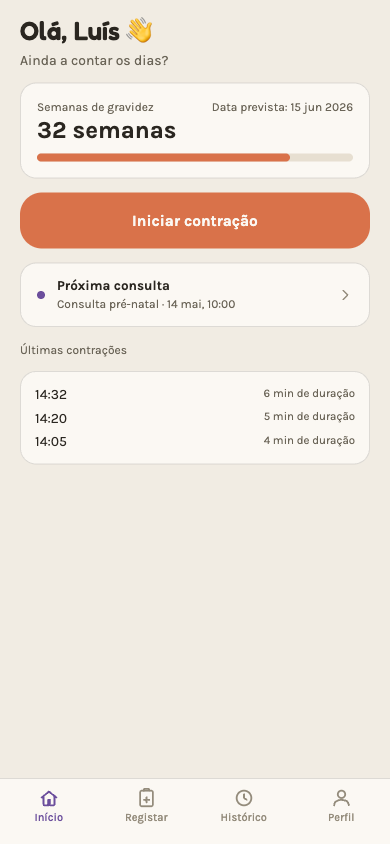
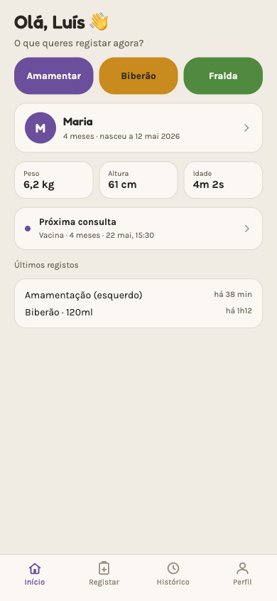
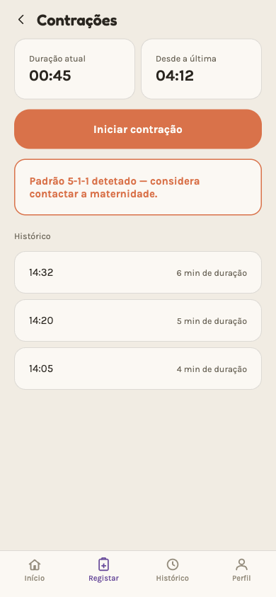
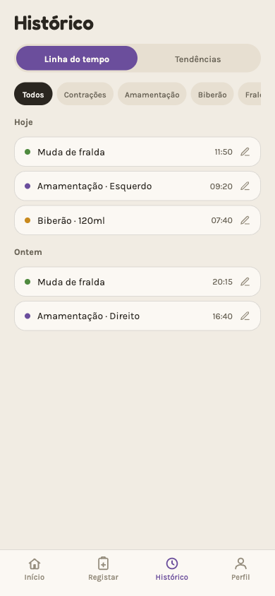
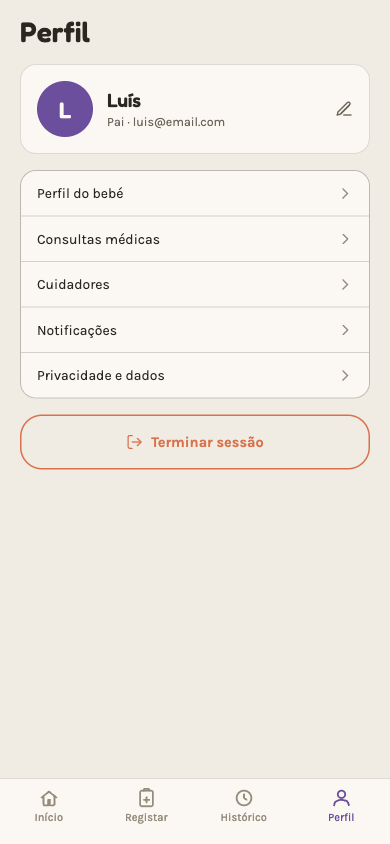

Cuddly ajuda a registar contrações, amamentação, biberão, fraldas e consultas médicas — pensada para ser usada com uma mão, a meio da noite. Open-source, feita como projeto académico.
Grande parte das apps de gravidez e pós-parto tenta fazer tudo ao mesmo tempo — estatísticas, redes sociais, conteúdo patrocinado. Cuddly fica só com o essencial.
Sem scroll infinito nem notificações desnecessárias. Abres, registas, fechas.
Botões grandes, poucos toques, tudo utilizável com uma mão só e meio a dormir.
Modo Grávida antes do parto, modo Pós-parto depois — a app muda consigo, não o contrário.
Sem venda de dados a terceiros, sem publicidade. Ver a secção de privacidade abaixo.
Quatro áreas já implementadas no MVP; as restantes estão planeadas para versões seguintes.
Cronómetro e deteção do padrão 5-1-1.
Cronómetro por lado, sugestão do próximo.
Quantidade e tipo de leite.
Registo rápido, tempo desde a última.
Em breve.
Em breve.
Mockups do design actual da app (não screenshots finais — a implementação está em curso).






Todos os dados mostrados são fictícios.
Cuddly é o projeto final de UC00507 (Conceber páginas web dinâmicas), IEFP — construído por Luís, Sara, Eliseu e Beatriz.
A build Android (APK) fica disponível aqui assim que o MVP estiver pronto para testar fora do Expo Go.
Ver releases no GitHub